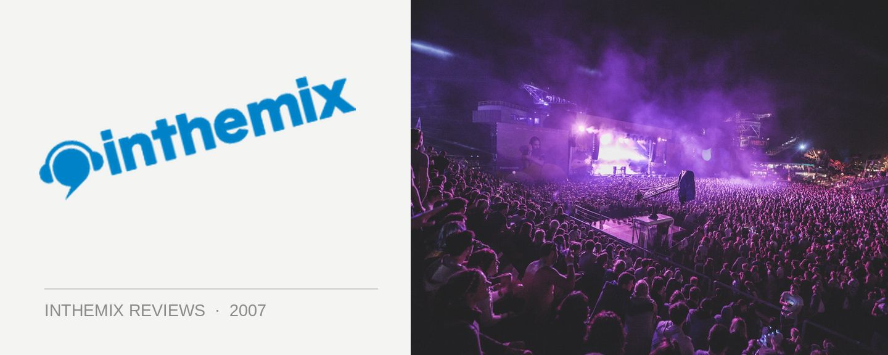

Field Day @ The Domain, Sydney (01/01/07)
After the insanity of last year’s Field Day, punters were approaching this year’s event with what could only be described as fearful apprehension. Field Day ‘06 was a freak of nature – the second hottest day ever on record in Sydney and the hottest ever New Years Day, measured as 45 degrees around the city but reaching the sweltering temperature of 48 degrees in the Domain. Yep, it was freakin’ hot but this year we had a different concern – the rain. Weather reports had predicted everything from ‘severe thunderstorms’ to ‘light passing showers’, but waking up on monday Morning around 10am after a few too many New Years Eve beers it wasn’t looking good. The rain was bucketing down with no sight of clearing – last year’s 40+ degree temperatures weren’t looking so bad in hindsight after all.
Luckily by the time I reached the Domain at 12:30 the clouds hads dispersed and the sun was starting to come out – revealing a glorious sunny blue day that never really got too hot. It’s always interesting (and pleasant) arriving at Field Day a little earlier in the day – in stark contrast to when thousands upon thousands of people later descend on the venue and it takes what seems like hours to get from stage to stage, the punters are a lot more thinly dispersed across the grassy plains of the Domain. It makes for the most pleasant part of the day, a touch of calm before the storm and giving you a chance to grab a drink without having to queue and get excited about the craziness to come.
Hybrid was what got the music fans out of bed early this year, many dragging their sorry asses to the party well before they were ready. A live performance at Field Day from the UK progressive breaks act was just too good to miss – the symphonic grandness of I Choose Noise was one of the albums of the year for many – but the enthusiasm was muted by the discovery they would be hitting the Fuzzy Breaks Stage at 1pm. Nonetheless, an impressive crowd gathered over the hour to hear the duo, who were backed up by a full-band setup featuring guitars, drums, keyboards and a truckload of electronic equipment, and those that made it were treated to a sound that was every bit as ‘large’ and darkly euphoric as their studio efforts. Both broody and uplifting at the same time, Hybrid didn’t disapoint but by the time they wrapped things up with their essential classic Finished Symphony, you just couldn’t help feeling how much more enjoyable it would have been if they had been playing when the sun went down.
I’d been to every single Field Day since Fuzzy kickstarted the event in 2002, and doubted there was much much that I could take from a party that I’d already been to six times. But there was plenty of new stuff on offer in 2007 – cocktail bars scattered around the Domain and an outdoor cinema situated conveniently on a shady grassy slope where you chill out if the partying ever became too much. Even the Pavillion On The Park jazz lounge had been kept open for those so inclined – as long as punters would agree to don the appropriate top hat before entering. The Killer Stage had made its debut at the previous year’s party, showcasing harder-edged tech and electro sounds, but this year it had been transformed into a massive open-air spot that was probably twice as big as the Breaks Stage at the first Field Day. An impressive international lineup featuring Tom Neville, Jamie Lidell and Switch were showcased on the stage during the day and it was pumping from beginning to end. Being a bit of a breaks fanboy personally, the only set I managed to catch at the Killer Stage was DJ T’s excellent tech-heavy hour and a half. But it shows Fuzzy still has its finger on the pulse and can keep all of its crowd happy: there was enough musical variety at Field Day ‘07 to keep everyone satisfied.
Over at the Domain Concert Stage it was time for a little bit of Crazy Penis. Expectations were high for these guys after crackin’ live performances at both Parklife and Good Vibrations in years gone by, but what the crowd got was an all-too-chilled set that would have been better off over in the Jazz Lounge. It’s hard to say exactly what happened here: perhaps there was too much unfamilliar new material being dropped or maybe the cavernous space of the Main Stage didn’t work for their particular brand of disco funk. But the set was just too cruisy to really engage the crowd or get any hands in the air. Their performance was indicative of something that was just slightly off at Field Day this year. Nearly half of the acts booked were performing live and while in concept it should have been great, it didn’t quite lend itself to the party environment the event is renowned for. What worked so well in creating a ‘festival’ atmosphere at Parklife last year didn’t quite hit the spot this time.
Mylo was another of the big names to hit the Main Stage before the sun went down, and for someone with a reputation as an extremely popular producer but an average DJ, he did a whole lot better than expected. Trentemoller’s remix of Moby’s Go, a new mix of Daft Punk’s Around the World and his own eternal Drop the Pressure were just some of the big party tunes that got an airing. Sure there were a couple of trainwrecks, but nobody rockin’ out in the crowd seemed to give a shit. Mylo played a great party set: nothing less, nothing more.
Kaskade was next on the decks, pulling out his signature It’s You, It’s Me fairly early in the set amongst a collection of breezy deep house, which then progressed into an electro variation on the cruisy US sounds he made his name with. Fluffy most of it may have been, but it was also highly enjoyable and the crowd was certainly getting into it. For the main stage at least, Kaskade pretty much makes for the ideal DJ for Field Day. The Domain was packed out by this stage and one of my friends remarked that Field Day gives boys the chance to get in touch with their feminine side – plenty of fleuro headbands, pink tshirts and the like. As with other recent parties, the crowd was a bit of a mixed bag. You’ve got your fair share of ‘roid boys’ and glammed up Fuzzy bimbos that insist on wearing high-heel boots to a sweaty day event. When an event reaches a critical mass in popularity in the way that Field Day has, you always run the risk that you’re not going to connect with the crowd overall as much as much as you’d like, but you’d have to be a bit of a twat to let that get in the way of enjoying your day. Personally, I met more random friendly punters at this year’s Field Day than ever before.
For most of the day we were blessed with beautiful sunny weather that never got anywhere close to the scorching temperatures seen on January 1st last year, but it was just when The Freestylers were hitting the stage early in the early that the rain kicked in again. This was one of the performances I was looking forward to the most all day – I’m a big fan of their new album and The Freestylers have morphed into something musically that is so much more than ‘mere’ breaks. But shivering, wet and forced to run for cover in some parts, it made it a lot harder to enjoy the set as much as I would have liked. Nonetheless, they make for one of the best examples of dance music making the transition over to a live setting. Finishing off with the massive Painkiller, it brought with it the appropriate cheering response and exhiliration from the crowd.
Rounding off the day for me and everyone else at the Breaks Stage, the Plump DJs took to the decks at 9pm. The Plumps are one of the seminal Field Day acts, playing at no less that four out of the six events so far, but their performance two years ago was more than a little disapointing – consisting mostly of a stack of old and played-out tracks that we’d all already heard. The UK duo once seemed untouchable but it was looking like they’d been toppled from their throne – and it was this very lack of expectations that made their performance at Field Day this year all the more stunning and surprising. It was far from a DJ set that made you put your hands in the air from the familiarity of it all; instead it left your jaw hanging on the ground from its scorching range of fresh sounds.
The Plump DJs might have had a lot to prove, but they brought a whole new bag of tricks with them from the UK. Still featuring that fat, bouncy sound they’re renonwned for, the musicality behind it was something completely different. A hard, techy sound that may have even featured the odd 4/4 beat, it was just about as cutting-edge as you can get. Being one of the headliners at a gig like Field Day is a big deal for an act like the Plumps – there’s a lot of expectations resting on that 90 minutes – and they’d promised to bring with them a new direction in breaks, strongly influenced by a more ‘minimal’ sound. And oh boy, did they deliver. The set was nothing less than mindblowing and worth the $100 price of admission alone, a dose of slammin’ nu-school breaks that was both funky and hard-hitting at once, all blasting out of speakers that brought crystal clear treble and earth-shuddering bass, simply one of the best sound systems you’re ever likely to hear at a dance event. By the time they were pulling out classic productions like Get Kinky and I Feel Love to finish off the set, I was more than convinced the Plump DJs had reclaimed their title as the kings of nu-school breaks – the ones to signal the direction for the rest to follow. It was easily the best thing I heard all day, and it’ll go down as one of the classic Field Day sets.
For everyone that was present at the very first Field Day a couple of years ago, there’s no way it could ever be topped – breaks and house were exploding across Sydney, it had a strong sense of excitement and you just can’t beat the intimacy of what was a much smaller festival. But somehow it has retained its mantle as not only one of the city’s most iconic events, but as one of the best parties in the world, keeping us coming back again and again. This year’s Field Day had an attendance that was pushing towards 30,000, but as it loses its intimacy it brings with it a whole bunch of fresh surpises – new acts, stages, new gimmicks and even more grassy space to run amock in. I’ve yet to miss a single Field Day and who knows – maybe I’ll even be back for Field Day ‘08. Bloated and overgrown as it may be, there’s simply no other place to be but the Domain on New years Day.